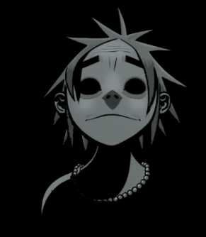

Phase 1
The story of Gorillaz begins on August 15th, 1997. Stu-Pot was a mentally deficient keyboard enthusiast and part-time employee at Uncle Norm's Organ Emporium. Satanist hoodlum Murdoc Niccals decided to ram-raid Uncle Norm's Organ Emporium to procure synthesizer equipment in order to establish a "chart-topping" musical group. However, Murdoc ended up driving his Vauxhall Astra through the building and directly into Stu-Pot's head, permanently damaging ("fracturing") Stu-Pot's left eye and putting him into a catatonic state. Murdoc was sentenced to "30,000 hours of community service, plus 10 hours every week of caring for the injured Stu-Pot". Not long after, Murdoc again injured Stu-Pot in a car accident in Nottingham's Tesco car park when attempting a 360° in order to impress some women. During the initial rotation, he was thrown through the windshield and landed face-first on a curb. This permanently damaged Stu-Pot's right eye but revived him from his coma. Impressed by Stu-Pot’s new look, Murdoc then recruited the newly recovered (albeit still mentally defective) Stu-Pot as the keyboardist and vocalist for his group, re-dubbing him 2-D for the matching pair of dents in his head from the accidents.

In September of 1998, Murdoc acquired the property of Kong Studios, a sprawling haunted studio with a rather shady history, situated atop a hill in the midst of a run-down cemetery and landfill in Districtshire, Essex.
Murdoc then found a drummer for the group in a Soho record store: African-American expatriate Russel Hobbs. Russel was a middle-class New York native and was deeply troubled as a youth. He was expelled from an expensive private school for suffering from demonic possession. The trauma of said possession resulted in a four-year coma from which Russel was roused only by an elaborately executed exorcism. After his recovery, Russel began attending Brooklyn High School, where he befriended a large amount of other musicians.
This was a short-lived respite, however, as all of Russel's newfound friends were suddenly gunned-down one night in a drive-by shooting. Russel, the sole survivor, became the unwilling receptacle for the spirits of all of his slain compatriots, most notable of whom was the rhyme dropping blue phantom, Del. With their latent possession of his body, Russel gained incredible musical prowess in percussion, rap, and hip-hop as well as a disturbing side-effect: his eyes glowed an eerie white. With this new and violent turn of events, Russel's family shipped him off to England in hopes of helping him recover from his traumas quietly, where he would unfortunetly later meet Murdoc.
At that point, all the fledgling group needed was a guitarist. Their first guitarist was 2-D's girlfriend, Paula Cracker, but she was shortly fired from the band after Russel caught her and Murdoc making love in the studio toilets. Disgusted by this, Russel broke Murdoc's nose five more times. Like so many British bands before them, the trio placed an advertisement in NME. The very day the ad ran, a FedEx freight container from Japan was delivered to their doorstep and out jumped a mysterious amnesiac 8-year-old wielding a Gibson Les Paul. The tiny girl made an incomprehensible introduction in Japanese and tore into a "riff to end all riffs" which ended with an impressive karate kick to the air. She then bowed, and spoke a single word in English to the stunned boys, which became her moniker: "Noodle". After the band was finally assembled, they changed their name to Gorillaz. Their first song was called "Ghost Train" and was recorded at Kong Studios.
These 4 members were made to stay, and created hit songs such as: Clint Eastwood, Rock The House, Tomorrow Comes Today and 19-2000. But after a large amount of drama, and too many drugs, the band went their seperate ways and went on a year and a half hiatus.
Phase 2
2-D went back to Eastbourne and worked at his father's funfair, where his ego got a significant boost and re-established his grip on reality, and come to terms with his newfound pop icon status with the ladies. He also began a friendship with Shane Lynch from Boyzone.
Russell remained in LA but became increasingly haunted by the Grim Reaper, who eventually banished Del from his body. Luckily, Russel was approached by Ike Turner who offered him sanctuary in his basement to recover.
Murdoc headed to Mexico to booze it up in Tijuana brothels, getting himself arrested for passing bad checks in the process. He enjoyed little company in his Mexican jail cell aside from his raven, Cortez, and two Mexican mobsters who would later help break him out.
Noodle went back to Japan in a fruitful attempt to uncover the secrets of her own past after suffering from nightmares and visions on the Gorillaz Tour. In Japan, she was reunited with her mentor, Mr. Kyuzo and learned that she was part of a secret government super soldier project and could speak English fluently. Noodle was the only survivor after the project was scrapped. Mr. Kyuzo erased Noodle's memory using the words, "Ocean Bacon" and sent her off to England in the FedEx crate. Armed with her newfound knowledge and iron resolve, Noodle was the first to return to Kong Studios. There she went to task battling the zombie and monster-infested darkness of the building, setting up the "Search For A Star" contest, writing an album’s worth of new songs, and pulling the band back together to record the album.
With the band reunited, the process of recording Demon Days began with the help of music producer, Dangermouse. It was released on May 23rd, 2005. The first single off the album was "Feel Good Inc." featuring De La Soul and it entered the UK charts at No.2. The album's second single, "DARE" featuring Shaun Ryder, became their first single to go to No.1. The third single was "Dirty Harry" featuring Bootie Brown and the last single was a double-sided single containing the songs, "Kids With Guns," featuring Neneh Cherry and "El Mañana."
On March 27th, 2005, Gorillaz performed at the Manchester Opera House where they were joined with most of the collaborators from the Demon Days album. From June 6th - June 22nd, Gorillaz embarked on The Deman Detour; a series of live radio shows throughout America. On February 15th, 2006, Gorillaz performed "Dirty Harry" at the Brit Awards featuring a huge choir of children and guest star, Bootie Brown.
In early 2006, Noodle wanted to leave Gorillaz for a break. She planned to leave straight after the filming of the "El Manana" video shoot. On March 7th, 2006, Gorillaz started the shoot for "El Manana" which starred Noodle on windmill island. Halfway through the video, the island was shot down with Noodle onboard. In an attempt to calm fans and save face, Murdoc claimed this was planned and that Noodle had escaped by parachute. In reality, the band searched but were unable to find her in the wreckage. The music video aired on Channel 4 on March 11th, 2006.
Shortly after, the three remaining Gorillaz members performed a residency of five shows at New York's Harlem Apollo and went their separate ways. Later in the year, an emergency transmission from Noodle was received in the Brain Room at the ruins of Kong Studios. Murdoc attempted to travel through the bowels of hell in order to bring her back but failed. This "rescue attempt" was then revealed to be a drunken stupor.
Phase 3
Murdoc went on to spend the next few years to bender around the world. In 2008, Murdoc began to run low on money, so he burned down the ruins of Kong Studios, cashed in on the insurance money, blamed the fire on some kids and fled the country. He also mentioned that part of the reason for the move was to flee from a deadly underground network of pirates simply referred to as the "Black Clouds", who were out to kill him after their business deal went south.
While searching the world for a new hideout, Murdoc discovered an island in the middle of the ocean made entirely out of landfill stuck together. He sprayed the island bright pink and used the insurance money to build a new Gorillaz HQ on top, renaming the island, "Plastic Beach." According to the pelican at the entrance of the building in the Plastic Beach adventure game, Plastic Beach is the farthest point from any other landmass in the world, dubbed "Point Nemo". After finding the island, he shipped a lot of the band's belongings to Plastic Beach, their new home. While residing on the island, Murdoc began production for the third Gorillaz album, but he had to reassemble his bandmates.
Murdoc said he tried to recover clues to Noodle's whereabouts from the wreckage of the windmill from El Mañana, but the most he could obtain was a DNA sample. He later used her DNA to create a violent cyborg version of Noodle, who acts as his bodyguard. Cyborg Noodle doesn't speak, but is adept at firearms and replaces Noodle as the band's guitarist.
2-D was gassed, kidnapped on his Beruit retreat, and taken to Plastic Beach in a suitcase as shown in 2-D's Plastic Beach Ident short. While the short seemingly reveals the Boogieman (the embodiment of all worldly evil who was sent by Satan to claim Murdoc's soul), as his kidnapper, 2-D believes Murdoc was the one who kidnapped him. 2-D was held at Plastic Beach against his will by Murdoc, who forces him to assist in the making of the next Gorillaz album.
Little was known about the fate of Russel initially, as Murdoc mentioned he had essentially dropped off the face of the earth. Murdoc mentions that he used a drum machine built from all of Russel's equipment to provide percussion for his album. Finally, Russel's Plastic Beach Ident short hit the website, showing him stomping down a fishing dock in a barely suppressed rage and jumping off the end into the ocean. While swimming the entire way to Plastic Beach, Russell ingested so much pollution, trash and toxic waste that he was transformed into a giant as tall as all of Plastic Beach, making a reference to Gulliver's Travels. Russell's situation reinforces the idea of human excess destroying nature already present on the album.
Murdoc and 2-D proceed to make their way to Plastic Beach via a road trip to the ocean in a 1969 Camaro SS (dubbed "Stylo'). Murdoc and 2-D are attacked by Bruce Willis, driving a 1968 El Camino. Cyborg Noodle is rendered useless due to a bullet through her head, and Willis opens fire on the two, resulting in a car chase that makes up the Stylo video. Murdoc drives them off a cliff into the ocean, and the car transforms into a shark-shaped submarine. The car chase was recorded on film by Murdoc's personal camera crew and was edited to make the music video for the "Stylo" single.
The Plastic Beach album was released on March 3rd, 2010.
The Boogieman moments before taking several bullets through his cape from Cyborg Noodle's rifle.
In the "On Melancholy Hill" video, Noodle is revealed to be alive and in hiding. She is seen escaping a cruise ship that is under attack by the Black Clouds. Meanwhile Murdoc, 2-D, and the newly recovered Cyborg Noodle, along with all the collaborators for the Plastic Beach album, make their way to Point Nemo together, traveling side by side in an armada of underwater vehicles. Upon arriving in a thick fog, Murdoc sights the Boogieman and orders his Cyborg bodyguard to open fire. The Boogieman escapes, leaving the fog to dissipate and reveal Plastic Beach. On the way to Plastic Beach, Russel finds the sea-stranded Noodle and rescues her, and together they continue on to be reunited with the rest of the band.
On November 21st, Gorillaz released a new single called "Doncamatic" featuring Daley. The music video for the single featured Daley piloting a one-man submarine through the depths of the ocean on his way to Plastic Beach. The song went to No.37 in the UK Singles Charts.
From October 3rd - December 21st, Gorillaz set off on their first world tour; "The Escape to Plastic Beach World Tour." Unfortunately, Murdoc, 2-D and Cyborg Noodle spent the entire tour locked in the dressing room while a Gorillaz "live band" took over the stage. Murdoc suspected that when he refused to give his soul to Satan for making Gorillaz successful, he kept the real Gorillaz out of the shows and gave the glory to the Gorillaz live band. The live band consisted of Daman Albarn and half of The Clash.
During the American leg of the tour, 2-D had been working on a new collection of Gorillaz music on his iPad. He had been experimenting with new sounds and apps in various locations during the tour, including his hotel room, backstage in the dressing rooms, and in the back of the tour bus. This collection of new music would become, "The Fall." It was released on Christmas Day in 2010 to stream for free on the band's website, as well as a download for members of the Sub-Division fan campaign. The album was given an official release on April 18th, 2011. The only single off the album was a double-sided single featuring the tracks, "Revolving Doors"/"Amarillo".
The storyboard music video for "Rhinestone Eyes" reveals that the Boogieman has a grudge against Murdoc due to a deal they made and that the Boogieman is the fifth rejected Horseman of Apocalypse, named "Flatulence". In the video, we see the Boogieman summon the Gorillaz "live band" who are revealed to have been part of the Black Clouds the whole time.
More Black Clouds raid Plastic Beach in planes similar to the ones that attacked Noodle, in an attempt at Murdoc's life. The album's collaborators, along with Cyborg Noodle, arm themselves with guns and retaliate, while Murdoc hides for fear of his own safety. 2-D, who is deathly afraid of whales, is frightened senseless when a whale nearly rams the underside of the island during the battle. However, just as it closes its jaws around the underwater window of 2-D's room, Russel appears and hurls the whale into an enemy plane, destroying it. Russel then leans onto the Beach and opens his mouth, revealing the real Noodle. Noodle then takes off her mask, revealing scars around her eye.
After the events of Rhinestone Eyes, it was revealed that Murdoc hired an imposter known as The Imposter Murdoc to take his place on the island while he made his escape in an attempt to trick the Boogieman into collecting the wrong soul, once the Boogieman had collected the soul of The Imposter Murdoc the debt was fulfilled and the grudge between the two was set aside.
Original/retconned ending
While escaping Plastic Beach, Murdoc was caught up in a typhoon and eventually landed in Hawaii. There, he began to record a radio show to celebrate Gorillaz' Ten Year anniversary. It later revealed that he wasn't in Hawaii at all, but was instead in a ransacked house at 212 Wobble Street, London, where the other three members managed to reach him.
Notice of Eviction.
In early 2012 the four remaining band members were seen living at 212 Wobble Street, London (as seen in the "DoYaThing" music video). 2-D is seen checking on Noodle as she sleeps. Most of her facial injuries appear to have healed. The Boogieman was also revealed to still be alive and lived in with the band, reading a newspaper. Russel is later seen sleeping on the roof of the row house as 2-D receives a letter stating that the band was being evicted from the residence. The floating windmill island can be seen in a state of disrepair and anchored to the roof of the building. This was later deemed non-canon when phase four began directly after the events of the “Rhinestone Eyes” video, with events contradicting what had originally been established in 2011's tenth anniversary radio special and 2012’s “DoYaThing” music video.
Phase 4
During the attack of Plastic Beach, Murdoc escaped the island with Cyborg Noodle in a submarine. On his way home to England, Murdoc was captured by EMI, the now-defunct former publisher of Gorillaz' music. EMI had been searching the globe for Murdoc, who they threw in "Dungeon Abbey", a secret prison beneath Abbey Road Studios. Murdoc was eventually released under the condition that he was to immediately begin work on a new Gorillaz album. Murdoc agreed and moved into a new studio/home in West London.[1]
Shortly after the attack on Plastic Beach, Noodle awoke in a small Japanese village and began working as a pearl diver under the apprenticeship of Chiyoko, the women who had nursed her back to health after finding her washed up on the Japanese shore. While working one day, Noodle accidentally released Mazuu, a shape-shifting devil that had spent over 500 years trapped in a large pearl at the bottom of the ocean. Noodle spent years chasing Mazuu, finding it in Tokyo disguised as a human, having risen the criminal underworld. Noodle infiltrated Mazuu's headquarters, decapitated Mazuu, and escaped in one piece. She packaged herself in a FedEx crate and addressed it to "West London, England, c/o Murdoc Niccals".[2]
While escaping Plastic Beach with Noodle, Russell had gotten separated off the coast of Japan. Being mistaken for a whale (due to his unusually large size) he was harpooned but managed to escape. He lost consciousness and washed up on the shores of North Korea, where he was carried to Pyongyang and exhibited as "Pulgasari", North Korea's "Godzilla". Russell became the country's most popular attraction before shrinking back to normal size due to malnutrition, after which he was sent back to London where he moved into Murdoc's home in West London to create a new Gorillaz album.[3]
During the attack of Plastic Beach, 2-D was swallowed whole by "Massive Dick", the whale that terrified him throughout his time spent on the island. Shortly after, Massive Dick died and washed up on the shore of a desert island. 2-D emerged from the whale's carcass and spent month's surviving solely off of Massive Dick's dead body, before realizing he was actually on Guadalupe Island off the coast of Mexico. He walked thirty minutes before finding a beach resort and spent the rest of the year there on vacation before finally heading home to England where he was picked up by a driver Murdoc hired and was reunited with the band.[4]
The band recorded throughout 2016 at Studio 13, Murdoc’s secret new studio in London, finally completing their first album in 7 years, Humanz, in 2017. Murdoc decided to release the album by throwing “the party to end all parties” in a haunted house in Detroit known as the “Spirit House”. [5] When the band first arrived at the house in the “Saturnz Barz” music video, they were haunted by three demons. A giant one-eyed blue worm haunted Noodle, a gray multi-limbed monster haunted Russel and a pizza slice with a face haunted 2-D. In the "Strobelite" music video, Noodle and 2-D have fun dancing at the party, while Russel sleeps and Murdoc does shady business with a mysterious man at the bar.
In June 2017 a song/music video called "Sleeping Powder" was discovered in 2D's room in the Gorillaz app. Later the same day, the video was released to the public, and one week later, the song was officially released as a single on digital platforms. 2D recorded the song and music video himself as a response to fans who criticized Humanz for having too many collaborators and not enough of 2D's voice.
The band went on a world tour, and even created their own festival called the Demon Dayz Festival. The first of which took place in Margate, England in June 2017. Before Gorillaz took the stage at Demon Dayz, a mysterious cult called the “Kool Klown Klan” were spotted holding bells and marching. Little is known about the cult, but they are referenced in the lyrics and imagery of the Humanz song “Momentz”.
In December 2017 the band released their own Magazine called G Magazine. The 34-page magazine features insights from the band on Humanz, editorials from each Gorillaz member, and an interview between the band, and their own co-creator Jamie Hewlett. In February 2018 the band won the Brit Award for Best British Band. While attempting to accept his award, Murdoc was arrested and taken to HM Prison Wormwood Scrubs in London for an undisclosed crime.
Phase 5
This phase five plot summary is adapted from Free Murdoc, music videos, social media, phase five interviews, Demon Dayz Festival 2018, and The Now Now Tour. The phrase "No More Unicorns Anymore" is the first and most prominently used of several marketing taglines associated with the phase.
Hot off the heels of their big return album with Humanz in 2017, the band decided to continue their momentum and release a follow-up album in 2018. The band hired Ace of The Powerpuff Girls fame to temporarily replace Murdoc as bassist while he was serving time in prison, and released their album, The Now Now.
In the "Humility" music video, Russell, Noodle, and Ace enjoy their day on the Venice Boardwalk in Los Angeles while uncharacteristically happy 2D roller-skates around the boardwalk, enjoying his new life without Murdoc constantly abusing him. At the end of the video, Russell trips 2D, whose eyes turn from white to black. After which, he loses his ability to roller-skate and immediately falls a second time.
While the band embarked on their 2018 tour supporting The Now Now, Murdoc began planning his escape from prison. Murdoc claimed that the man he met at the bar in the “Strobelite” video was a demon crime-lord named “El Mierda”, who framed him for smuggling. Murdoc decided to escape the prison and track down El Mierda, but he couldn't bribe his way out since Noodle had frozen his bank account, believing him to be guilty of smuggling. He decided that picking a fight with "Big Balls McGuinness" (one of the toughest prisoners in Wormwood Scrubs) would give him the respect he needed to get inside info on El Mierda from other prisoners. After losing the fight to Big Balls, he set his sights on "Vlad the Inhaler", an associate of El Mierda. Murdoc recruited a fan to catfish Vlad, getting close enough to him to find the whereabouts of El Mierda. Astonishingly, this worked, and Murdoc now had coordinates he believed to be the crime lord's hideout in Patagonia.
Murdoc finally enlisted the help of Noodle, who had been ignoring his countless calls. She only agreed to help after realizing the demon El Mierda is a soul harvester and may have taken 2-D’s soul, noting he hasn't been acting like himself for months. Convinced Murdoc knows about this, she refuses to do it for his sake but instead 2D's. Noodle set course for Patagonia to take on El Mierda herself. A week later, Noodle reported that she was safe - still embarking on her trip to El Mierda's hideout, being shown the way by some Andean mountain cats after getting "kinda lost". However, due to complications, Murdoc had decided to escape once and for all singlehandedly through the sewers. In a turn for the worst, he was assumed to have drowned in sewage while trying to escape. Meanwhile, the rest of the band were enjoying the success of The Now Now, releasing a music video for the song “Tranz”.
Two weeks later, Noodle arrived at the coordinates Murdoc had discovered, but instead of a secret hideout, the coordinates led to a health spa. She met El Mierda, who had given up his life of crime years prior, converting his evil lair into the El Montaña Wellness Centre. Notably, she discovered that El Mierda was not the man Murdoc met in the “Strobelite” video, but was, in fact, an immortal old man who had never even heard of Murdoc. Noodle researched the details of Murdoc’s incarceration to discover that he was not sent to prison for smuggling but rather simple parking fines. He was only meant to serve nine months and would have been released the same day he supposedly drowned during his escape. Noodle discovered that Murdoc had greatly fabricated the nature of his imprisonment, blaming his crime on the man from the “Strobelite” video, who turned out to just be an innocent leather salesman named Juan.
Moments later, a yak arrived at the El Montaña Wellness Centre. Noodle went to investigate to find Murdoc tied to the top of the yak. It turned out that Murdoc was simply acting out for attention, making up an imprisonment story that he described as “mostly bollocks”. But as his story grew more outlandish he felt a need to continue keeping up appearances, resulting in an unnecessary prison escape that nearly had him killed. The only clue to why he survived has been a mysterious person or thing he saw while in the sewer, which he later sketched out. His near-death experience gave him the epiphany that headlines weren't worth lying and putting Noodle in unnecessary danger. He decided to meet Noodle at El Mierda’s hideout, tying himself to a yak he named Madge after Madonna. Murdoc was even prepared to sacrifice himself to save her if need be, luckily this was unnecessary and when he arrived, the two simply spent a few days at the health spa while Murdoc apologized for his actions. After learning the true nature of El Mierda, the two discerned that 2-D’s difference in character was simply him enjoying his new-found confidence without Murdoc around abusing him, or as Murdoc put it, “just missing me”. When Noodle and Murdoc returned to the band, Murdoc vowed to be a better man and joined them on the final leg of The Now Now Tour.
Towards the end of 2018, the band teamed up with Casio to produce a line of Gorillaz G-Shock watches. The band released a promotional web-series to advertise the line of watches. The series, titled “Mission M101” follows the band on an intergalactic adventure, teaming up with G-Shock founder Kikuo Ibe to release their line of watches across the galaxy. On October 20th, the band performed at the Día de Muertos themed Demon Dayz Festival 2018 in Los Angeles. Four days later, the band played their final show of The Now Now Tour in Mexico City, Mexico.
Phase 6
During a brief hiatus for the band, on the 3rd of September 2019 while visiting Iran to see Lake Urmia, Noodle made note of how climate change had taken a toll on the lake. She came to a realization regarding the fleeting state of nature on Earth, and sent a post-card to Murdoc, 2D, and Russel at Studio 13 with a message detailing her desire to build a machine and see the world before it’s gone. The post-card arrived at Studio 13 on the 12th of September.[6]
On the 7th of September, 2D sent a post-card to the band while visiting Beirut, informing Noodle that he got the parts for the machine she had mentioned, asking what they were for. The post-card arrived at Studio 13 on the 24th of September.[7]
On the 14th of September, Murdoc sent a post-card from his annual drunken holiday in Ibiza. The post-card arrived at Studio 13 on the 26th of September.[8]
On the 21st of September, Russel sent a post-card from Mexico while working on his hot sauce business, "Hobbs Hot Sauce". He included a message telling the band that he’d “be seeing [them] and the machine REAL soon”. The post-card arrived at Studio 13 on the 4th of October.[9]
Season One: Strange Timez (2020)
The machine (revealed as the "Song Machine") was activated on the 28th of January.[10] The following day, the band announced their next project, Song Machine, a multimedia series of songs/music videos released episodically through 2020, as a continuously-updating playlist via streaming services.
In a statement to the press, Russell said "Song Machine is a whole new way of doing what we do. Gorillaz breaking the mould ‘cos the mould got old. World is moving faster than a supercharged particle, so we’ve gotta stay ready to drop. We don’t even know who’s stepping through the studio next. Song Machine feeds on the unknown, runs on pure chaos. So whatever the hell’s coming, we’re primed and ready to produce like there’s no tomorrow. Y’know, just in case.”[11]
Throughout the course of the series, the band collaborates with musicians they’ve met on their various trips around the world, inviting them to record at their now renamed West London studio, officially dubbed the new Kong Studios.[12] In the music video for “Désolé”, 2D, Noodle, and Russel travel to Lake Como via a mysterious teleporting door in Kong Studios and record with Fatoumata Diawara. Murdoc is left behind and unable to reopen the portal, leaving him lonely and depressed at Kong. When questioned about this, Murdoc claimed he wasn’t upset about being left behind and didn’t care about their trip to Italy. Shortly before enviously asking 2D and Russel about portals just “in case [he] ever [needs] to find one for future reference”.
In the face of a global pandemic, the band practiced social distancing, sequestering themselves in various parts of Kong Studios.[13] Murdoc locked himself in Kong’s basement, explaining how he was working on “something big” that would “change the effing world”. After a look through his online purchase history, this “something big” appears to have involved nearly £500 worth of pine wood and a blow up doll.[14] Meanwhile, Russel caught up on television while experimenting with an assorted variety of food/entertainment combinations.[15]
As the months passed, Murdoc continued providing social media updates regarding his secret project, before finally unveiling it in the music video for Pac-Man.[16][17] This special project, his very own orgone accumulator (based on the pseudoscientific concept of Wilhelm Reich), was built solely by Murdoc in the basement of Kong Studios. Throughout the video Murdoc can be seen contentedly sitting and relaxing in his creation, which in an act of jealousy and defiance, he claims can also act as his own private teleportation portal despite not showing any interest or apparent ability of opening a portal of any kind.
In the Strange Timez music video, the band took a trip through space to destroy a billboard on the moon. In the music video for The Valley of the Pagans, the band traveled through a portal to Los Angeles for a drive around the city before abruptly falling through another portal leading them to Plastic Beach.
In the music video for The Lost Chord, the band found themselves back at Plastic Beach ten years after the Black Clouds’ attack on the island. Past trauma resurfaced as they explored the remains of the island. Murdoc is seen overcome with guilt at the sight of a damaged and deactivated Cyborg Noodle. Soon after, a sea monster awoke from the depths of the ocean and began destroying the island. The deactivated Cyborg Noodle is seen opening her eye as she lifelessly sinks to the bottom of the ocean. A portal back to Kong suddenly opened up as the ruins of the island sunk into the ocean. 2D, Noodle, and Russel escaped as the portal closed, leaving Murdoc stranded in the ocean. In the spirit of friendship and forgiveness, 2D quickly reopened the portal and reached out, saving Murdoc’s life.